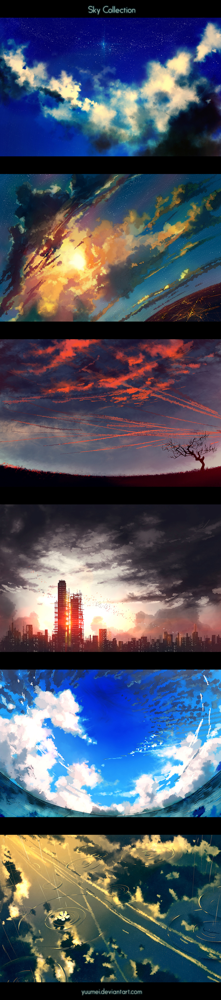

How to paint different clouds, skies, and stars!
In 2013, I made a few custom cloud and star brushes in Photoshop and tested them out by creating the following 6 sky paintings. The brushes saved a lot of time, so I was able to speed up my work and finish each painting in an hour or less. Keep scrolling down to see the 2 cloud tutorials I made, plus free downloads for the Photoshop brushes :)
